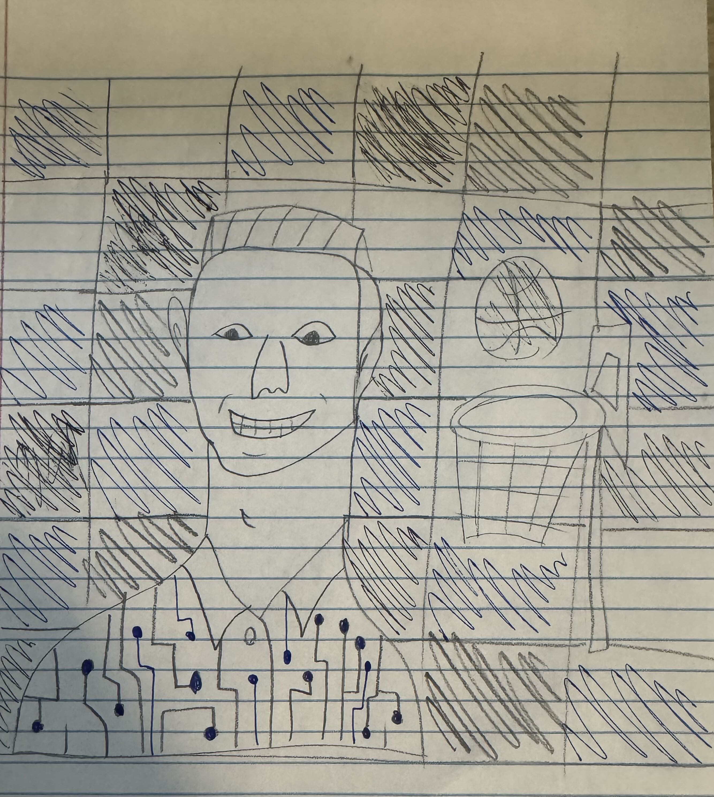
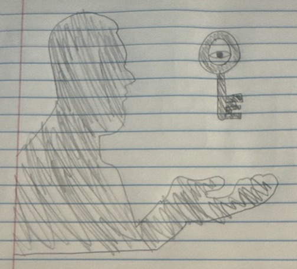

Project Gallery
Below are some of my projects from the course, showing my skills and growth.
Self Portrait
Description: This portrait represents how I see myself as a problem solver. The Rubik's cube-inspired grid in the background symbolizes my interest in puzzles, and the circuit design on my shirt reflects my passion for computer science. The basketball hoop highlights teamwork and reliability under pressure.
Skills Gained: Symbolism, visual composition, personal representation, creative explanation.
Fantasy & Reality

Description: This drawing shows how I use imagination to practice basketball even when I'm not on the court. By visualizing plays, passes, and game situations, I learn to make quicker decisions and manage pressure. The artwork reflects how imagination helps turn fantasy into real improvement and builds confidence during actual gameplay.
Skills Gained: Symbolic illustration, emotional reflection, connecting personal habits to visual storytelling, creative technique.
Alternative Representation

Description: This drawing challenges narrow stereotypes by portraying a Jewish firefighter rescuing a baby from a fire. The image highlights courage, service, and compassion, showing that Jewish identity includes a wide range of meaningful roles beyond common misconceptions. The artwork aims to broaden how people view Jewish individuals by emphasizing heroism and positive contributions to society.
Skills Gained: Social commentary through art, stereotype analysis, symbolic communication, representing identity with purpose.
Truth & Perspective
Description: This drawing explores how truth is influenced by those who hold authority. The figure represents people in power, while the key symbolizes control over which "truth" is shared. The eye within the key emphasizes that truth is shaped by perspective and intention. The piece reflects how influence and decision-making determine what becomes accepted or recognized as truth.
Skills Gained: Symbolism, theme interpretation, abstract representation, visual metaphor.
Poem

Poem:
Orange ball in flight,
Echoes through the gym at night.
Leather meets the hand,
Defender falls, crowd in command.
End of game in sight,
Pressure builds beneath the light.
Victory or fall,
Truth lies in the bounce of the ball.
Description: This visual poem is written in the shape of a basketball to connect its form with its meaning. The short, energetic lines recreate the intensity and rhythm of the game, describing the sounds, pressure, and movement players experience. The final line, "truth lives in the bounce of the ball," emphasizes how every moment in the game reveals effort, determination, and passion.
Skills Gained: Shape poetry, imagery, rhythm, expressive writing, visual-verbal connection.
Haiku & Haiga

Haiku:
Sneakers scrape the floor,
Ball hits rim, then drops through clean,
Crowd jumps to their feet.
Description: This project pairs a haiku about a high-energy basketball moment with a haiga illustration that brings the scene to life. The poem captures the tension and release as the ball hits the rim and drops through the net, while the drawing shows the court, the players, and the cheering crowd. The "kigo" (crowd) creates an exciting atmosphere, and the "kireji" provides a shift from suspense to celebration.
Skills Gained: Haiku structure, haiga illustration, combining poetry with imagery, understanding of kigo and kireji, conveying mood through concise language.
Collaborative Art Piece

Description: This artwork blends the swirling night sky of Vincent van Gogh's The Starry Night with the geometric, abstract facial style of Pablo Picasso. The wispy background lines reflect Van Gogh's expressive movement, while the angular shapes forming the figure show Picasso's influence. The combination highlights how different artistic styles can merge to create a single, unified expression of emotion and identity.
Skills Gained: Artistic blending, stylistic interpretation, mixed-influence composition, understanding of major art movements.
Personal Symbol

Description: This drawing uses the relationship between a lion and a gazelle to show how success requires constant effort and adaptation. Whether predator or prey, survival depends on movement, purpose, and resilience. The rising sun symbolizes new challenges each day, while the animals represent persistence in the face of pressure. The piece reflects the idea that growth happens through determination and taking action.
Skills Gained: Symbolic interpretation, visual metaphor, conveying abstract ideas through imagery, reflective writing.